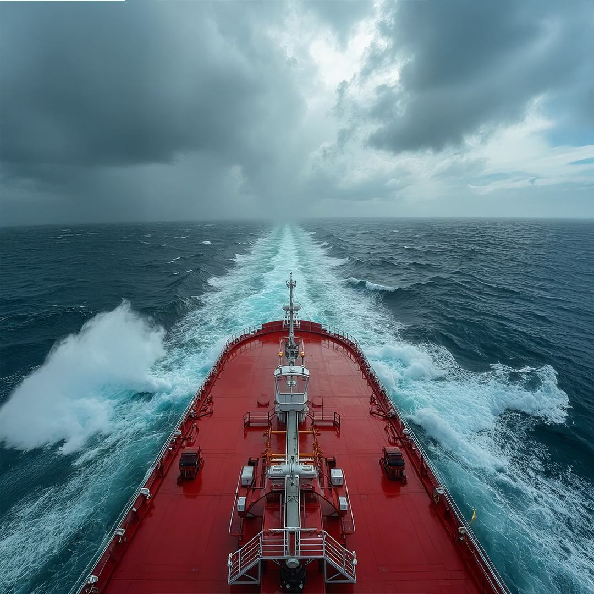
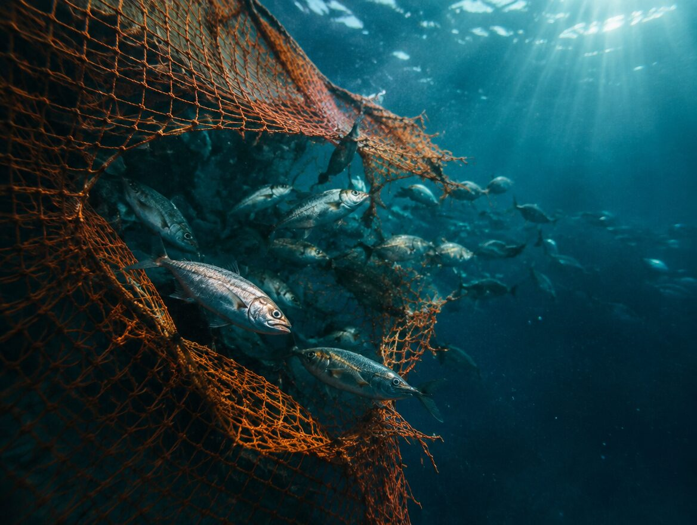
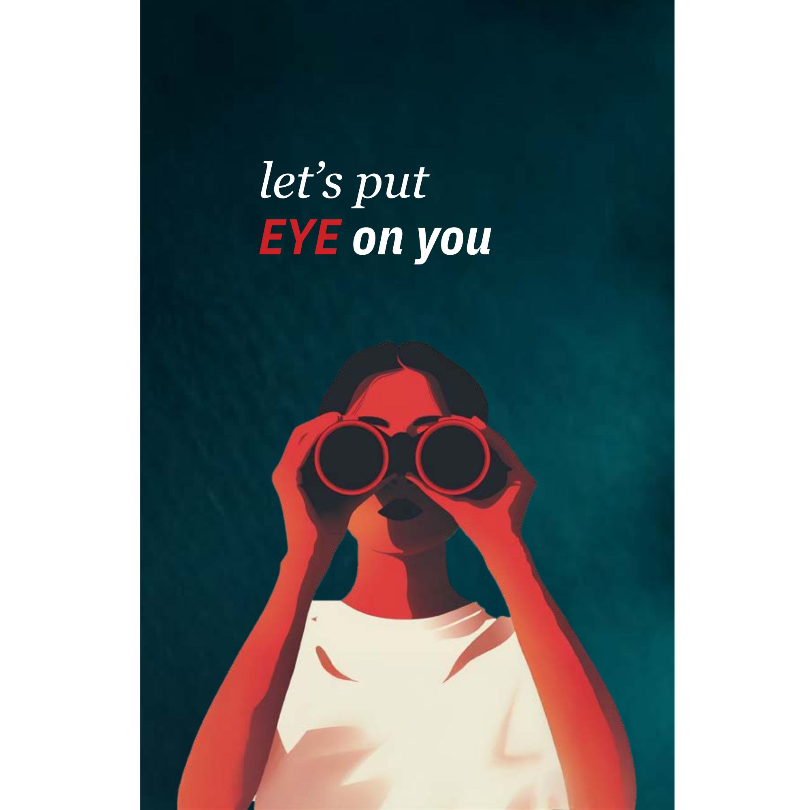
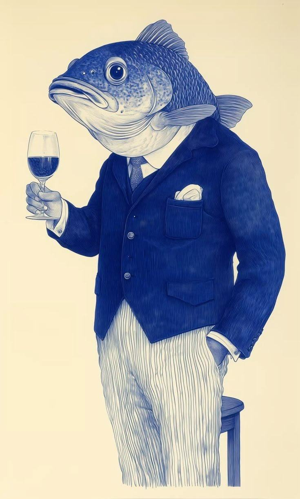
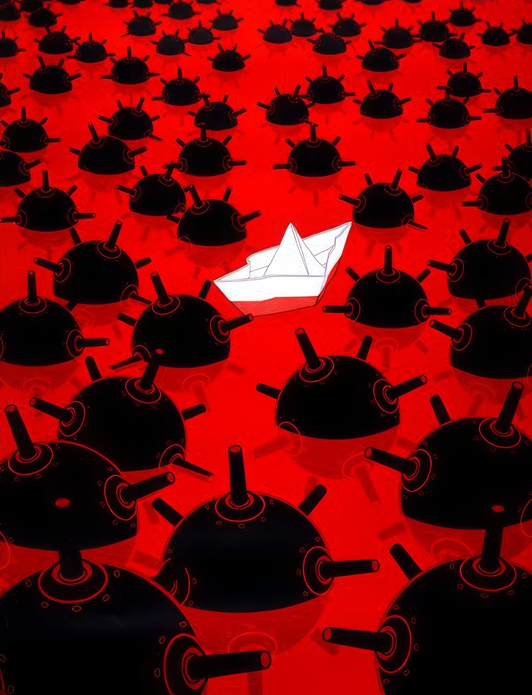

Same flag as everyone
Modern, polished, premium, and indistinguishable from the companies around you. In a crowded market, looking right is not the same as standing out.
When your marketing stops working
Marketing not working anymore? Ready to change how you’re seen? I find out why, and rebuild it from strategy to execution.
Assume you have a ship. That ship is your business.
It has sailed well in familiar waters. The crew knows its roles, the routes are known, and the destination is clear: growth, market share, better clients, new opportunities.
But the ship has changed. It carries more than it used to, it is heading somewhere new, or the waters around it are no longer the same.
The currents are different. The ports have their own rules. The people on shore no longer read the ship the way they used to.
The ship is moving. But the flag it flies was made for an earlier voyage. The question is whether it is still being understood, and whether it is heading where it should.

Modern, polished, premium, and indistinguishable from the companies around you. In a crowded market, looking right is not the same as standing out.
What you say makes sense inside the company. Outside, it is heard, but not understood the way you intended, especially by decision-makers who read trust differently.
The way you present yourself still describes the company you were. Clients, partners and talent meet that version, not the one you’ve become.

Interest is there, but leads slip away because the path from first contact to decision isn’t built for how your buyers decide.
Campaigns, events, content, agencies: lots of activity, little clarity on what moves the business forward.
Teams, partners and agencies pull in different directions, or lack the skills the strategy needs, because no one owns the full picture.

Even one of these is enough to stall a company’s growth. Most companies have more than one, and can’t see them from the inside.
Where I come in
My work sits where narrative and operations meet. Many advisors can shape a story; many agencies can execute. Few connect the two, so the story you tell is backed by a system that delivers it.
How I work:
The core of my work is diagnosis, direction and design. When you need execution, it’s delivered by Veloxitas Agency, my full-service marketing agency, working under my direction and alongside your team, so you have one point of accountability from strategy to result.
Explore Veloxitas AgencyThe engagement
A structured assessment of how your company is seen, understood and chosen by the market you want to win, and what needs to change.
What you get:
Best suited for: established B2B organisations whose marketing has stopped working, or who are ready to change how they’re seen: after growth, a change in direction, a shift in market demand, a move into a new market, or simply because the strategy or the team behind it isn’t working. I work with organisations across the UAE, the wider GCC and Australia.
How it starts: a 20-minute clarity conversation. You tell me where you are and where you want to go. If it’s a fit, I’ll outline the process and next steps.
Book a clarity conversation

Research in progress
Most companies don’t notice the moment their marketing stops working. The activity continues and the budget is spent, but the results fade. I’m studying why this happens to established B2B companies, and what the ones that recover do differently.
The findings will be published here. If you lead marketing, communications or growth at a B2B company and would like to contribute your perspective, I’d be glad to hear from you.
I’m Yasmin Khataie. For more than 10 years I’ve worked with founders, C-level leaders and cross-functional teams across the UAE, Australia and the wider GCC.
My role has rarely been limited to one department. I’m usually the person brought in to connect the dots: between marketing and operations, between what a company says and how it’s heard, and between markets that read the same message differently.
My background started in architecture. It taught me to understand structure before building anything, and I still work that way. Before shaping how a company is seen, I make sure the foundation underneath can carry it.
Today I help organisations that have outgrown how they’re seen rebuild it, from strategy and message to team and execution, so the right people understand and trust them.
Founders, C-level executives, regional directors and senior leaders of established B2B organisations whose marketing has stopped working, or who are ready to change how they’re seen.
Yes. Any company that has outgrown how it describes itself, or isn’t understood by the clients it wants, faces the same problem. And if expansion is on your roadmap, a clear diagnosis before you enter usually costs far less than correcting course after.
No. Marketing is one part of what I look at. The diagnostic covers positioning, message, market approach, customer journey and how your teams and partners work together.
Not in the usual sense. A rebrand often starts with a logo. I start with the business: why the way you’re seen isn’t working, and what’s behind it, from strategy and message to team and execution. If the visual identity needs to change, that comes last.
If you need it. Veloxitas Agency implements the roadmap under my direction, so you deal with one person accountable for the result. There’s no obligation: the roadmap is yours, and you can execute it with your own team or any partner you choose.
It depends on the challenge. Some work best one-to-one; others need key decision-makers in the room. We decide together in the first conversation.
Tell me where you are and where you want to go. In 20 minutes we’ll know whether I can help.
Book a clarity conversation